Research Outline
Underlying goals of our research program include (i) synthesis and characterization of novel nanoscale materials, (ii) elucidation of their fundamental optoelectronic properties, and (iii) design and demonstration of functional devices based on these nanoscale materials.
While much of the work in our laboratory has been directed toward solar energy conversion, fundamental research in this expanding field has far reaching implications that extend to other present and future devices that operate on a molecular level. Ultimately, we will be able to rationally design multi-functional nanoscale interfaces to perform specific functions. Our research has also branched out to biomedical imaging, photocatalysis and development of hybrid light-emitting diodes. Summarized below are our recent discoveries that provide new directions for our future research.
Delayed Photoluminescence in Metal-Conjugated Fluorophores
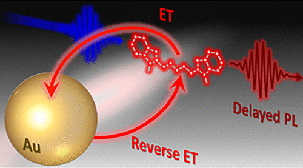
Assemblies of metal nanostructures and fluorescent molecules represent a promising platform for the development of biosensing and near-field imaging applications. Typically, the interaction of molecular fluorophores with surface plasmons in metals results in either quenching or enhancement of the dye excitation energy. Here, we demonstrate that fluorescent molecules can also engage in a reversible energy transfer (ET) with proximal metal surfaces, during which quenching of the dye emission via the energy transfer to localized surface plasmons can trigger delayed ET from metal back to the fluorescent molecule. The resulting two-step process leads to the sustained delayed photoluminescence (PL) in metal-conjugated fluorophores, as was demonstrated here through the observation of increased PL lifetime in assemblies of Au nanoparticles and organic dyes (Alexa 488, Cy3.5, and Cy5). The observed enhancement of the PL lifetime in metal-conjugated fluorophores was corroborated by theoretical calculations based on the reverse ET model, suggesting that these processes could be ubiquitous in many other dye–metal assemblies.
Self-Assembled PbS/CdS Quantum Dot Films with Switchable Symmetry and Emission
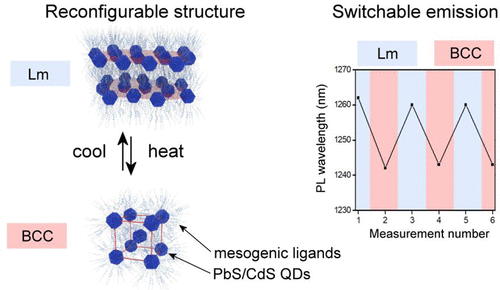
Precise tuning of optoelectronic properties of solid-state materials assembled from colloidal semiconductor nanocrystals (quantum dots, QDs) is of utmost importance for future optoelectronic technologies. Tuning can be achieved through varying composition, size, chemical environment, and arrangement of QDs; however, little is known about the possibility of achieving dynamic, reversibly switchable systems of QDs. Here, we report on the assembly of PbS/CdS core/shell quantum dots films, which exhibit reversibly switchable symmetry. Dynamic nanostructured assemblies were achieved by conjugating QDs with the two types of thermoresponsive, promesogenic ligands. The 3D arrangement of PbS/CdS nanoparticles in thin films was characterized by means of temperature-dependent small-angle X-ray measurements. Using optical techniques, we show that structural reconfiguration allows modulating the PL spectrum of QD solids in a reversible and predictable manner. Moreover, fabricated QD solids enable 3 orders of magnitude faster switchability than state-of-the-art examples of liquid crystalline quantum dots. We anticipate that the present methodology will allow for the assembly of various QD solids where structure and optoelectronic properties can be dynamically controlled.
Thermally activated delayed photoluminescence from pyrenyl-functionalized CdSe quantum dots
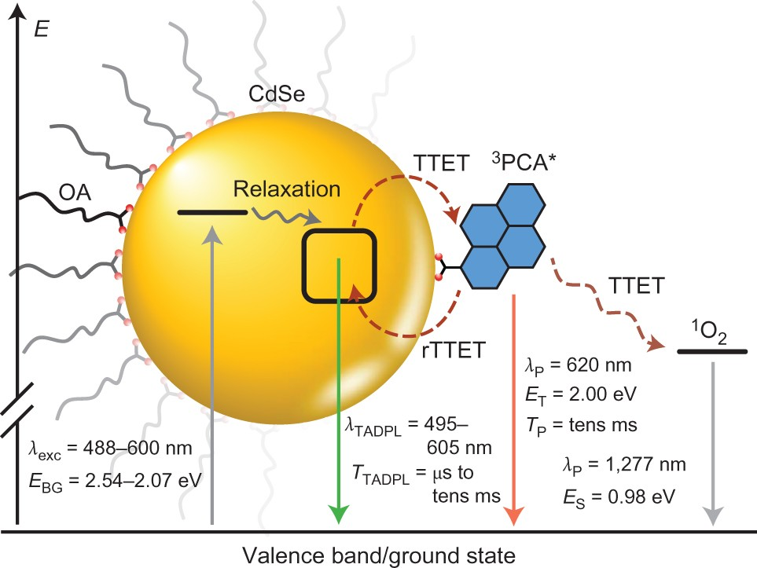
The generation and transfer of triplet excitons across semiconductor nanomaterial–molecular interfaces will play an important role in emerging photonic and optoelectronic technologies, and understanding the rules that govern such phenomena is essential. The ability to cooperatively merge the photophysical properties of semiconductor quantum dots with those of well-understood and inexpensive molecular chromophores is therefore paramount. Here we show that 1-pyrenecarboxylic acid-functionalized CdSe quantum dots undergo thermally activated delayed photoluminescence. This phenomenon results from a near quantitative triplet–triplet energy transfer from the nanocrystals to 1-pyrenecarboxylic acid, producing a molecular triplet-state ‘reservoir’ that thermally repopulates the photoluminescent state of CdSe through endothermic reverse triplet–triplet energy transfer. The photoluminescence properties are systematically and predictably tuned through variation of the quantum dot–molecule energy gap, temperature and the triplet-excited-state lifetime of the molecular adsorbate. The concepts developed are likely to be applicable to semiconductor nanocrystals interfaced with molecular chromophores, enabling potential applications of their combined excited states.
Mongin, C.; Moroz, P.; Zamkov, M., Castellano, F. N. Nature Chemistry 2018, 10, 225-230.
Competition of Charge and Energy Transfer Processes in Donor–Acceptor Fluorescence Pairs: Calibrating the Spectroscopic Ruler
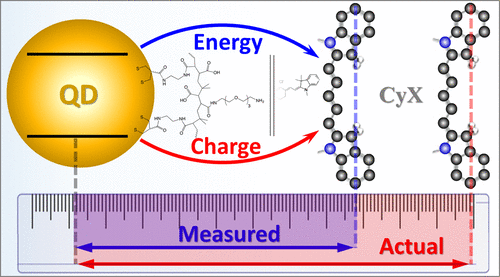
Sensing strategies utilizing Förster resonance energy transfer (FRET) are widely used for probing biological phenomena. FRET sensitivity to the donor–acceptor distance makes it ideal for measuring the concentration of a known analyte or determining the spatial separation between fluorescent labels in a macromolecular assembly. The difficulty lies in extracting the FRET efficiency from the acceptor-induced quenching of the donor emission, which may contain a significant non-FRET contribution. Here, we demonstrate a general spectroscopic approach for differentiating between charge transfer and energy transfer (ET) processes in donor–acceptor assemblies and apply the developed method for unravelling the FRET/non-FRET contributions in cyanine dye–semiconductor quantum dot (QD) constructs. The present method relies on correlating the amplitude of the acceptor emission to specific changes in the donor excitation profile in order to extract ET-only transfer efficiencies. Quenching of the donor emission is then utilized to determine the non-ET component, tentatively attributed to the charge transfer. We observe that the latter accounts for 50–99% of donor emission quenching in QD-Cy5 and QD-Cy7 systems, stressing the importance of determining the non-FRET efficiency in a spectroscopic ruler and other FRET-based sensing applications.
Just Add Ligands: Self-Sustained Size Focusing of Colloidal Semiconductor Nanocrystals
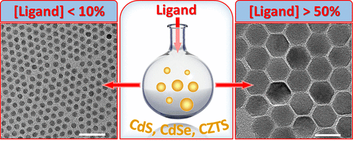
Digestive ripening (DR) represents a powerful strategy for improving the size homogeneity of colloidal nanostructures. It relies on the ligand-mediated dissolution of larger nanoparticles in favor of smaller ones and is often considered to be the opposite of Ostwald ripening. Despite its successful application to size-focusing of metal colloids, digestive ripening of semiconductor nanocrystals has received little attention to date. Here, we explore this synthetic niche and demonstrate that ligand-induced ripening of semiconductor nanocrystals exhibits an unusual reaction path. The unique aspect of the DR process in semiconductors lies in the thermally activated particle coalescence, which leads to a significant increase in the nanocrystal size for temperatures above the threshold value (Tth = 200–220 °C). Below this temperature, nanoparticle sizes focus to an ensemble average diameter just like in the case of metal colloids. The existence of the thermal threshold for coalescence offers an expedient strategy for controlling both the particle size and the size dispersion. Such advanced shape control was demonstrated using colloids of CdS, CdSe, CsPbBr3, and CuZnSnS4, where monodisperse samples were obtained across broad diameter ranges. We expect the demonstrated approach to be extended to other semiconductors as a simple strategy for tuning the nanoparticle morphology.
Solar hydrogen generation: Exceeding 100% efficiency
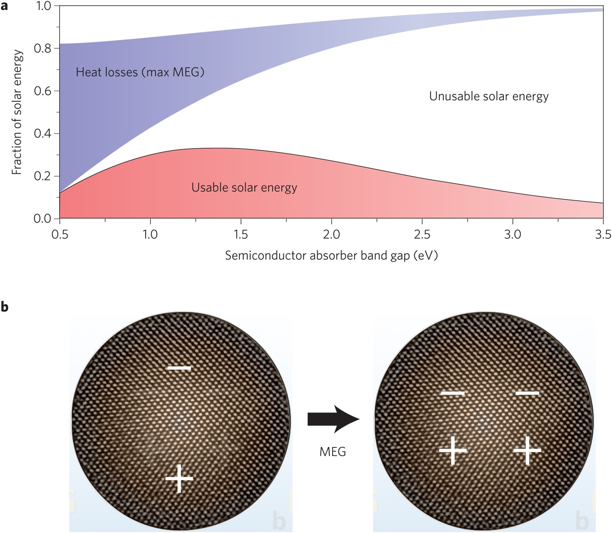
Multiple exciton generation, in which two electron–hole pairs are generated from the absorption of one high-energy photon, has been demonstrated to improve efficiency in quantum-dot-based solar cells. Now, a photoelectrochemical system using PbS quantum dots is shown to drive hydrogen evolution with external quantum efficiency over 100%.
Energy Transfer in Quantum Dot Solids
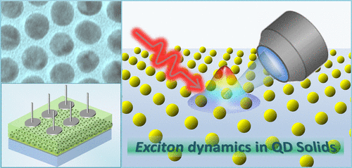
Understanding the energy flow in quantum dot solids represents an important step toward designing artificial systems with configurable optoelectronic properties. The growing complexity of nanoparticle assemblies and deposition techniques calls for advanced methods of characterization and control of the underlying exciton diffusion, which is pervasive in these materials. Along these lines, the Perspective will review recent strategies for measuring the energy transfer processes in assemblies of semiconductor nanocrystals with particular emphasis on emerging avant-garde characterization techniques. We will also shed light on novel experimental methods for controlling the energy diffusion in quantum dots solids, highlighting the role of assembly architecture in ensuing processes of exciton diffusion and dissociation. Novel energy transfer mechanisms recently observed in perovskite quantum dots and triplet-sensitizer nanocrystals will also be discussed.
One-Dimensional Carrier Confinement in “Giant” CdS/CdSe Excitonic Nanoshells
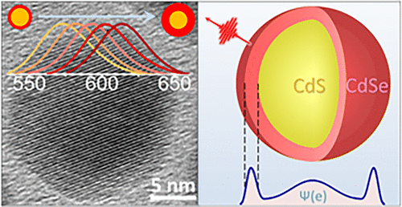
The emerging generation of quantum dot optoelectronic devices offers an appealing prospect of a size-tunable band gap. The confinement-enabled control over electronic properties, however, requires nanoparticles to be sufficiently small, which leads to a large area of interparticle boundaries in a film. Such interfaces lead to a high density of surface traps which ultimately increase the electrical resistance of a solid. To address this issue, we have developed an inverse energy-gradient core/shell architecture supporting the quantum confinement in nanoparticles larger than the exciton Bohr radius. The assembly of such nanostructures exhibits a relatively low surface-to-volume ratio, which was manifested in this work through the enhanced conductance of solution-processed films. The reported core/shell geometry was realized by growing a narrow gap semiconductor layer (CdSe) on the surface of a wide-gap core material (CdS) promoting the localization of excitons in the shell domain, as was confirmed by ultrafast transient absorption and emission lifetime measurements. The band gap emission of fabricated nanoshells, ranging from 15 to 30 nm in diameter, has revealed a characteristic size-dependent behavior tunable via the shell thickness with associated quantum yields in the 4.4–16.0% range.
Tracking the Energy Flow on Nanoscale via Sample-Transmitted Excitation Photoluminescence Spectroscopy
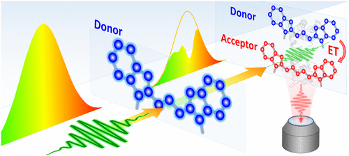
Tracking the energy flow in nanoscale materials is an important yet challenging goal. Experimental methods for probing the intermolecular energy transfer (ET) are often burdened by the spectral crosstalk between donor and acceptor species, which complicates unraveling their individual contributions. This issue is particularly prominent in inorganic nanoparticles and biological macromolecules featuring broad absorbing profiles. Here, we demonstrate a general spectroscopic strategy for measuring the ET efficiency between nanostructured or molecular dyes exhibiting a significant donor–acceptor spectral overlap. The reported approach is enabled through spectral shaping of the broadband excitation light with solutions of donor molecules, which inhibits the excitation of respective donor species in the sample. The resulting changes in the acceptor emission induced by the spectral modulation of the excitation beam are then used to determine the quantum efficiency and the rate of ET processes between arbitrary fluorophores (molecules, nanoparticles, polymers) with high accuracy. The feasibility of the reported method was demonstrated using a control donor–acceptor system utilizing a protein-bridged Cy3-Cy5 dye pair and subsequently applied for studying the energy flow in a CdSe560-CdSe600 binary nanocrystal film.
Double-Well Colloidal Nanocrystals Featuring Two-Color Photoluminescence
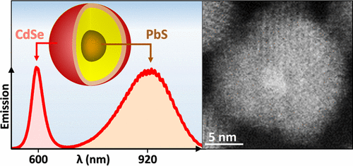
Ratiometric sensing strategy relies on the ratio of the two photoluminescence (PL) signals originating from the same nano-object for detecting the changes in the surrounding media. Recently, such dual-color emission has been demonstrated in semiconductor colloids, where the PL signal from a quantum-confined domain was complemented with the secondary emission from transition metal ions or a bulk-like structure. Here, we report on the development of dual-color nanocrystal colloids featuring a combination of two quantum-confined emitters within the same nano-object. The reported morphology relies on double-well core/barrier/shell arrangement, where zero-dimensional excitons of the core component (PbS) can coexist with two-dimensional excitons of the shell domain (CdSe). As a result, the core and shell emission bands can be independently tuned across 880–1500 nm and 600–650 nm spectral windows, respectively. A CdS potential barrier at the PbS/CdSe interface was designed to suppress the energy and charge diffusion between the two domains allowing both emission bands to exhibit quantum yields over 10%. Fabricated colloids were demonstrated as dual-color probes for sensing the redox environment, where both the energetics and the timing of photoinduced charge transfer to an add-on analyte could be inferred from the ratiometric measurements.
Direct observation of triplet energy transfer from semiconductor nanocrystals
Triplet excitons are pervasive in both organic and inorganic semiconductors but generally remain confined to the material in which they originate. We demonstrated by transient absorption spectroscopy that cadmium selenide semiconductor nanoparticles, selectively excited by green light, engage in interfacial Dexter-like triplet-triplet energy transfer with surface-anchored polyaromatic carboxylic acid acceptors, extending the excited-state lifetime by six orders of magnitude. Net triplet energy transfer also occurs from surface acceptors to freely diffusing molecular solutes, further extending the lifetime while sensitizing singlet oxygen in an aerated solution. The successful translation of triplet excitons from semiconductor nanoparticles to the bulk solution implies that such materials are generally effective surrogates for molecular triplets. The nanoparticles could thereby potentially sensitize a range of chemical transformations that are relevant for fields as diverse as optoelectronics, solar energy conversion, and photobiology.
Colloidal Synthesis of Monodisperse Semiconductor Nanocrystals through Saturated Ionic Layer Adsorption
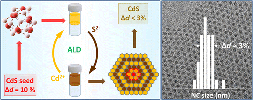
We demonstrate a general strategy for the synthesis of colloidal semiconductor nanocrystals (NCs) exhibiting size dispersion below 5%. The present approach relies on the sequential deposition of fully saturated cationic and anionic monolayers onto small-diameter clusters, which leads to focusing of nanocrystal sizes with the increasing particle diameter. Each ionic layer is grown through a room-temperature colloidal atomic layer deposition process that employs a two-solvent mixture to separate the precursor and nanocrystal phases. As a result, unreacted precursors can be removed after each deposition cycle, preventing the secondary nucleation. By using CdS NCs as a model system, we demonstrate that a narrow size dispersion can be achieved through a sequential growth of Cd2+ and S2– layers onto starting CdS cluster “seeds”. Besides shape uniformity, the demonstrated methodology offers an excellent batch-to-batch reproducibility and an improved control over the nanocrystal surface composition. The present synthesis is amenable to other types of semiconductor nanocrystals and can potentially offer a viable alternative to traditional hot-injection strategies of the nanoparticle growth.
Mapping the Exciton Diffusion in Semiconductor Nanocrystal Solids
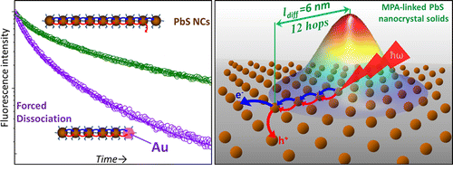
Colloidal nanocrystal solids represent an emerging class of functional materials that hold strong promise for device applications. The macroscopic properties of these disordered assemblies are determined by complex trajectories of exciton diffusion processes, which are still poorly understood. Owing to the lack of theoretical insight, experimental strategies for probing the exciton dynamics in quantum dot solids are in great demand. Here, we develop an experimental technique for mapping the motion of excitons in semiconductor nanocrystal films with a subdiffraction spatial sensitivity and a picosecond temporal resolution. This was accomplished by doping PbS nanocrystal solids with metal nanoparticles that force the exciton dissociation at known distances from their birth. The optical signature of the exciton motion was then inferred from the changes in the emission lifetime, which was mapped to the location of exciton quenching sites. By correlating the metal–metal interparticle distance in the film with corresponding changes in the emission lifetime, we could obtain important transport characteristics, including the exciton diffusion length, the number of predissociation hops, the rate of interparticle energy transfer, and the exciton diffusivity. The benefits of this approach to device applications were demonstrated through the use of two representative film morphologies featuring weak and strong interparticle coupling.
Measuring the Time-Dependent Monomer Concentration during the Hot-Injection Synthesis of Colloidal Nanocrystals
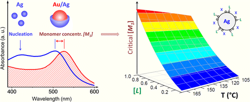
The shape of colloidal nanoparticles grown via hot-injection routes is largely determined by the reaction-limited rate of monomer nucleation. This offers an important synthetic benefit of tuning the morphology of colloidal nanocrystals simply by controlling the rate of monomer release during the thermal conversion of precursors. Unfortunately, the monomer concentration in colloidal reactions is difficult to track in situ, which obscures the actual effect of the temperature, monomer solubility, and ligand density on the probability of nanoparticle nucleation. Here, we develop an experimental strategy for monitoring the time-dependent monomer concentration during the hot-injection synthesis of Ag nanocrystals. This approach employs Au nanoparticles as chemical probes of the Ag monomer build-up in the reaction flask. The precipitation of Ag on the surface of Au nanoparticles is diffusion-limited and results in a blue-shift of the plasmon resonance that is used to gauge the Ag monomer concentration, [Ag0]. By measuring [Ag0] immediately before the nucleation burst, we were able to elucidate the effect of several reaction parameters on the nucleation dynamics and the ultimate morphology of Ag nanocrystals. In particular, we show that the nucleation rate is independent of the reaction temperature but is highly sensitive to the concentration of free ligands in solution.
Plasmonic Nanocrystal Solar Cells Utilizing Strongly Confined Radiation
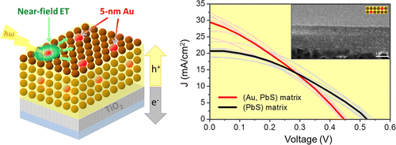
The ability of metal nanoparticles to concentrate light via the plasmon resonance represents a unique opportunity for funneling the solar energy in photovoltaic devices. The absorption enhancement in plasmonic solar cells is predicted to be particularly prominent when the size of metal features falls below 20 nm, causing the strong confinement of radiation modes. Unfortunately, the ultrashort lifetime of such near-field radiation makes harvesting the plasmon energy in small-diameter nanoparticles a challenging task. Here, we develop plasmonic solar cells that harness the near-field emission of 5 nm Au nanoparticles by transferring the plasmon energy to band gap transitions of PbS semiconductor nanocrystals. The interfaces of Au and PbS domains were designed to support a rapid energy transfer at rates that outpace the thermal dephasing of plasmon modes. We demonstrate that central to the device operation is the inorganic passivation of Au nanoparticles with a wide gap semiconductor, which reduces carrier scattering and simultaneously improves the stability of heat-prone plasmonic films. The contribution of the Au near-field emission toward the charge carrier generation was manifested through the observation of an enhanced short circuit current and improved power conversion efficiency of mixed (Au, PbS) solar cells, as measured relative to PbS-only devices.
Enhanced Lifetime of Excitons in Nonepitaxial Au/CdS Core/Shell Nanocrystals
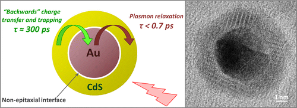
The ability of metal nanoparticles to capture light through plasmon excitations offers an opportunity for enhancing the optical absorption of plasmon-coupled semiconductor materials via energy transfer. This process, however, requires that the semiconductor component is electrically insulated to prevent a “backward” charge flow into metal and interfacial states, which causes a premature dissociation of excitons. Here we demonstrate that such an energy exchange can be achieved on the nanoscale by using nonepitaxial Au/CdS core/shell nanocomposites. These materials are fabricated via a multistep cation exchange reaction, which decouples metal and semiconductor phases leading to fewer interfacial defects. Ultrafast transient absorption measurements confirm that the lifetime of excitons in the CdS shell (τ ≈ 300 ps) is much longer than lifetimes of excitons in conventional, reduction-grown Au/CdS heteronanostructures. As a result, the energy of metal nanoparticles can be efficiently utilized by the semiconductor component without undergoing significant nonradiative energy losses, an important property for catalytic or photovoltaic applications. The reduced rate of exciton dissociation in the CdS domain of Au/CdS nanocomposites was attributed to the nonepitaxial nature of Au/CdS interfaces associated with low defect density and a high potential barrier of the interstitial phase.
Infrared Emitting PbS Nanocrystal Solids through Matrix Encapsulation
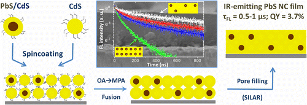
Colloidal semiconductor nanocrystals (NCs) are emerging as promising infrared-emitting materials, which exhibit spectrally tunable fluorescence, and offer the ease of thin-film solution processing. Presently, an important challenge facing the development of nanocrystal infrared emitters concerns the fact that both the emission quantum yield and the stability of colloidal nanoparticles become compromised when nanoparticle solutions are processed into solids. Here, we address this issue by developing an assembly technique that encapsulates infrared-emitting PbS NCs into crystalline CdS matrices, designed to preserve NC emission characteristics upon film processing. An important feature of the reported approach is the heteroepitaxial passivation of nanocrystal surfaces with a CdS semiconductor, which shields nanoparticles from the external environment leading to a superior thermal and chemical stability. Here, the morphology of these matrices was designed to suppress the nonradiative carrier decay, whereby increasing the exciton lifetime up to 1 μs, and boosting the emission quantum yield to an unprecedented 3.7% for inorganically encapsulated PbS NC solids.
Suppressed Carrier Scattering in CdS-Encapsulated PbS Nanocrystal Films
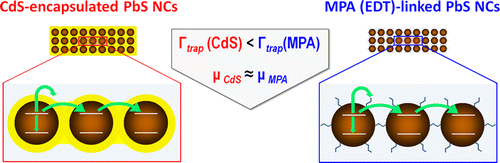
One of the key challenges facing the realization of functional nanocrystal devices concerns the development of techniques for depositing colloidal nanocrystals into electrically coupled nanoparticle solids. This work compares several alternative strategies for the assembly of such films using an all-optical approach to the characterization of electron transport phenomena. By measuring excited carrier lifetimes in either ligand-linked or matrix-encapsulated PbS nanocrystal films containing a tunable fraction of insulating ZnS domains, we uniquely distinguish the dynamics of charge scattering on defects from other processes of exciton dissociation. The measured times are subsequently used to estimate the diffusion length and the carrier mobility for each film type within the hopping transport regime. It is demonstrated that nanocrystal films encapsulated into semiconductor matrices exhibit a lower probability of charge scattering than that of nanocrystal solids cross-linked with either 3-mercaptopropionic acid or 1,2-ethanedithiol molecular linkers. The suppression of carrier scattering in matrix-encapsulated nanocrystal films is attributed to a relatively low density of surface defects at nanocrystal/matrix interfaces.
Improving the Catalytic Activity of Semiconductor Nanocrystals through Selective Domain Etching
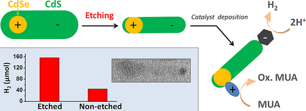
Colloidal chemistry offers an assortment of synthetic tools for tuning the shape of semiconductor nanocrystals. While many nanocrystal architectures can be obtained directly via colloidal growth, other nanoparticle morphologies require alternative processing strategies. Here, we show that chemical etching of colloidal nanoparticles can facilitate the realization of nanocrystal shapes that are topologically inaccessible by hot-injection techniques alone. The present methodology is demonstrated by synthesizing a two-component CdSe/CdS nanoparticle dimer, constructed in a way that both CdSe and CdS semiconductor domains are exposed to the external environment. This structural morphology is highly desirable for catalytic applications as it enables both reductive and oxidative reactions to occur simultaneously on dissimilar nanoparticle surfaces. Hydrogen production tests confirmed the improved catalytic activity of CdSe/CdS dimers, which was enhanced 3–4 times upon etching treatment. We expect that the demonstrated application of etching to shaping of colloidal heteronanocrystals can become a common methodology in the synthesis of charge-separating nanocrystals, leading to advanced nanoparticles architectures for applications in areas of photocatalysis, photovoltaics, and light detection.
Inorganic Solids of CdSe Nanocrystals Exhibiting High Emission Quantum Yield
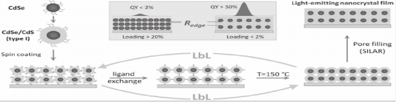
A general strategy for the assembly of all‐inorganic light‐emitting nanocrystal films with emission quantum yield in the 30–52% range is reported. The present methodology relies on solution‐processing of CdSe nanocrystals into a crystalline matrix of a wide band gap semiconductor (CdS, ZnS), which replaces the original molecular ligands on nanocrystal surfaces with an inorganic medium. Such matrices efficiently protect nanoparticles from the surrounding environment and preserve the quantum confinement of electrical charges in embedded CdSe NCs. In addition to strong emission, fabricated films show excellent thermal and chemical stability, and a large refractive index, which avails their integration into emerging solid‐state nanocrystal devices, including light‐emitting diodes, solar concentrators, and quantum dot lasers.
The Effect of the Charge-Separating Interface on Exciton Dynamics in Photocatalytic Colloidal Heteronanocrystals
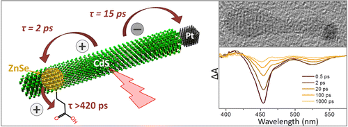
Ultrafast transient absorption spectroscopy was used to investigate the nature of photoinduced charge transfer processes taking place in ZnSe/CdS/Pt colloidal heteronanocrystals. These nanoparticles consist of a dot-in-a-rod semiconductor domain (ZnSe/CdS) coupled to a Pt tip. Together the three components are designed to dissociate an electron–hole pair by pinning the hole in the ZnSe domain while allowing the electron to transfer into the Pt tip. Separated charges can then induce a catalytic reaction, such as the light-driven hydrogen production. Present measurements demonstrate that the internal electron–hole separation is fast and results in the localization of both charges in nonadjacent parts of the nanoparticle. In particular, we show that photoinduced holes become confined within the ZnSe domain in less than 2 ps, while electrons take approximately 15 ps to transition into a Pt tip. More importantly, we demonstrate that the presence of the ZnSe dot within the CdS nanorods plays a key role both in enabling photoinduced separation of charges and in suppressing their backward recombination. The implications of the observed exciton dynamics to photocatalytic function of ZnSe/CdS/Pt heteronanocrystals are discussed.
Dye-sensitized photovoltaic properties of hydrothermally prepared TiO2 nanotubes
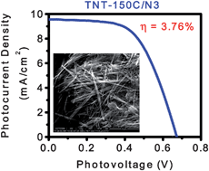
Hydrothermal synthesis utilizing aqueous alkaline reaction conditions was employed for the preparation of TiO2 nanotubes. The ultimate material morphology was found to be extremely sensitive to the nature of the reaction conditions including the chemical nature of the reactor itself—well-defined TiO2 nanotubes were obtained only when the reaction was carried out in a Teflon reactor/autoclave assembly, as ascertained by electron microscopy imaging. In addition, it was shown that the nanomaterial morphology heavily impacted the performance of dye-sensitized photovoltaic devices based on these materials; devices assembled from well-defined TiO2 nanotubes exhibited marked overall improvement in the power conversion efficiency. Several individual experimental parameters including hydrothermal synthesis temperature, film thickness, TiO2 paste composition, and sintering temperature were shown to affect the photovoltaic properties of the resultant solar cells. Upon sensitization with Ru(dcbpyH2)2(NCS)2, optimized devices showed an average power conversion efficiency of 3.76 ± 0.25% under AM1.5G one sun illumination, seemingly limited by low dye surface coverages.
Heteroepitaxial Growth of Colloidal Nanocrystals onto Substrate Films via Hot-Injection Routes
Hot-injection synthesis of colloidal nanocrystals (NCs) in a substrate-bound form is demonstrated. We show that polycrystalline films submerged into hot organic solvents can nucleate the heteroepitaxial growth of semiconductor NCs, for which the ensuing lattice quality and size distribution are on the par with those of isolated colloidal nanoparticles. This strategy is demonstrated by growing lead chalcogenide NCs directly onto solvent-submerged TiO2 substrates. The resulting PbX/TiO2 (X = S, Se, Te) nanocomposites exhibit heteroepitaxial interfaces between lead chalcogenide and oxide domains and show an efficient separation of photoinduced charges, deployable for light-harvesting applications. The extendibility of the present method to other material systems was demonstrated through the synthesis of CdS/TiO2 and Cu2S/TiO2 heterostructures, fabricated from PbS/TiO2 composites via cation exchange. The photovoltaic performance of nanocrystal/substrate composites comprising PbS NCs was evaluated by incorporating PbS/TiO2 films into prototype solar cells.
Fabrication of All-Inorganic Nanocrystal Solids through Matrix Encapsulation of Nanocrystal Arrays
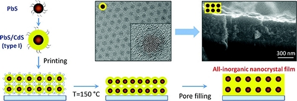
A general strategy for low-temperature processing of colloidal nanocrystals into all-inorganic films is reported. The present methodology goes beyond the traditional ligand-interlinking scheme and relies on encapsulation of morphologically defined nanocrystal arrays into a matrix of a wide-band gap semiconductor, which preserves optoelectronic properties of individual nanoparticles while rendering the nanocrystal film photoconductive. Fabricated solids exhibit excellent thermal stability, which is attributed to the heteroepitaxial structure of nanocrystal–matrix interfaces, and show compelling light-harvesting performance in prototype solar cells.
The Role of Hole Localization in Sacrificial Hydrogen Production by Semiconductor–Metal Heterostructured Nanocrystals
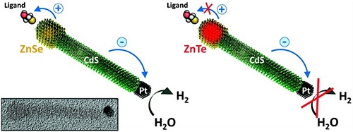
The effect of hole localization on photocatalytic activity of Pt-tipped semiconductor nanocrystals is investigated. By tuning the energy balance at the semiconductor–ligand interface, we demonstrate that hydrogen production on Pt sites is efficient only when electron-donating molecules are used for stabilizing semiconductor surfaces. These surfactants play an important role in enabling an efficient and stable reduction of water by heterostructured nanocrystals as they fill vacancies in the valence band of the semiconductor domain, preventing its degradation. In particular, we show that the energy of oxidizing holes can be efficiently transferred to a ligand moiety, leaving the semiconductor domain intact. This allows reusing the inorganic portion of the "degraded" nanocrystal-ligand system simply by recharging these nanoparticles with fresh ligands.
Heteroepitaxial growth of colloidal nanocrystals onto substrate films via hot-injection routes
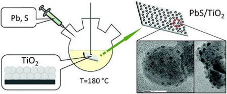
Hot-injection synthesis of colloidal nanocrystals (NCs) in a substrate-bound form is demonstrated. We show that polycrystalline films submerged into hot organic solvents can nucleate the heteroepitaxial growth of semiconductor NCs, for which the ensuing lattice quality and size distribution are on the par with those of isolated colloidal nanoparticles.
This strategy is demonstrated by growing lead chalcogenide NCs directly onto solvent-submerged TiO2 substrates. The resulting PbX/TiO2 (X = S, Se, Te) nanocomposites exhibit heteroepitaxial interfaces between lead chalcogenide and oxide domains and show an efficient separation of photoinduced charges, deployable for light-harvesting applications.
The extendibility of the present method to other material systems was demonstrated through the synthesis of CdS/TiO2 and Cu2S/TiO2 heterostructures, fabricated from PbS/TiO2 composites via cation exchange. The photovoltaic performance of nanocrystal/substrate composites comprising PbS NCs was evaluated by incorporating PbS/TiO2 films into prototype solar cells.
Tuning the morphology of Au/CdS nanocomposites through temperature-controlled reduction of gold-oleate complexes
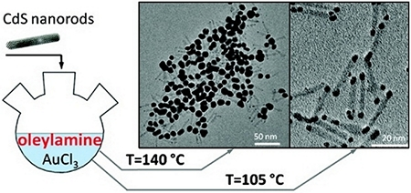
A general synthetic strategy for controlling the shape of gold domains grown onto CdS semiconductor nanocrystals is presented. The colloidal growth of Au nanoparticles is based on the temperature-controlled reduction of Au-oleate complexes on the surface of CdS and allows for precise tuning of nanoparticle diameters from 2.5 to 16 nm simply by adjusting the temperature of the growth solution, whereas the shape of Au/CdS nanocomposites can be controllably switched between matchsticks and barbells via the reaction rate. Depending on the exact morphology of Au and CdS domains, fabricated nanocomposites can undergo evaporation-induced self-assembly on a substrate either through end-to-end coupling of Au domains, resulting in the formation of one-dimensional chains or via side-by-side packing of CdS nanorods, leading to the onset of two-dimensional superlattices.
Synthesis of PbS/TiO2 colloidal heterostructures for photovoltaic applications
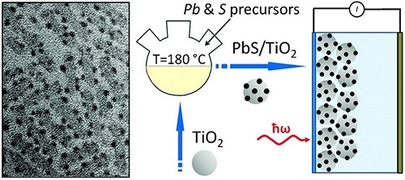
We report on heteroepitaxial growth of nearly monodisperse PbS nanocrystals onto the surface of TiO2 nanoparticles via colloidal hot-injection routes. Fabricated PbS/TiO2 nanocomposites can be dispersed in nonpolar solvents, which enables an easy solution processing of these materials into mesoporous films for use as light-absorbing layers in nanocrystal-sensitized solar cells.
High-temperature deposition of the sensitizer material allows controlling both the size and the number of PbS domains grown onto TiO2 nanoparticles, whereby providing synthetic means for tuning the absorbance spectrum of PbS/TiO2 nanocomposites and simultaneously enhancing their photocatalytic response in the visible and near-infrared. Compared with conventional ionic bath deposition of PbS semiconductors onto TiO2, the reported method results in an improved nanocrystal quality and narrower distribution of PbS sizes; meanwhile, the use of hot-temperature deposition of PbS (T = 180 °C) promotes the formation of near-epitaxial relationships between PbS and TiO2 domains, leading to fewer interfacial defects.
The photovoltaic response of pyridine-treated PbS/TiO2 nanocomposites was investigated using a two-electrode cell filled with polysulfide electrolyte. The measured photocurrent compared favorably to that of PbS/TiO2 electrodes fabricated via chemical bath deposition.
Ultrafast carrier dynamics in type II ZnSe/CdS/ZnSe nanobarbells
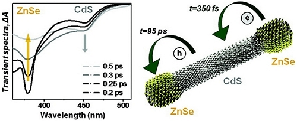
We employ femtosecond transient absorption spectroscopy to get an insight into ultrafast processes occurring at the interface of type II ZnSe/CdS heterostructured nanocrystals fabricated via colloidal routes and comprising a barbell-like arrangement of ZnSe tips and CdS nanorods. Our study shows that resonant excitation of ZnSe tips results in an unprecedently fast transfer of excited electrons into CdS domains of nanobarbells (h= 95 ps).
A qualitative thermodynamic description of observed electron processes within the classical limit of Marcus theory was used to identify a specific charge transfer regime associated with the ultrafast electron injection into CdS. Potential photocatalytic applications of the observed fast separation of carriers along the main axis of ZnSe/CdS barbells are discussed.
Radiative recombination of spatially extended excitons in (ZnSe/CdS)/CdS heterostructured nanorods
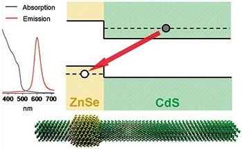
We report on organometallic synthesis of luminescent (ZnSe/CdS)/CdS semiconductor heterostructured nanorods (hetero-NRs) that produce an efficient spatial separation of carriers along the main axis of the structure (type II carrier localization). Nanorods were fabricated using a seeded-type approach by nucleating the growth of 20−100 nm CdS extensions at [000 ± 1] facets of wurtzite ZnSe/CdS core/shell nanocrystals. The difference in growth rates of CdS in each of the two directions ensures that the position of ZnSe/CdS seeds in the final structure is offset from the center of hetero-NRs, resulting in a spatially asymmetric distribution of carrier wave functions along the heterostructure. Present work demonstrates a number of unique properties of (ZnSe/CdS)/CdS hetero-NRs, including enhanced magnitude of quantum confined Stark effect and subnanosecond switching of absorption energies that can find practical applications in electroabsorption switches and ultrasensitive charge detectors.
Synthesis and characterization of type II ZnSe/CdS core/shell nanocrystals
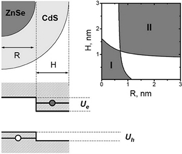
High-quality ZnSe/CdS core/shell nanocrystals, exhibiting a type II carrier localization regime, were fabricated via a traditional pyrolysis of organometallic precursors. The two-step synthesis involved fabrication of 4.5−6 nm ZnSe seeds followed by a subsequent deposition of the CdS shell.
An efficient spatial separation of electrons and holes between the core and the shell was observed for heterostructures containing more than three monolayers of CdS, which was primarily evidenced by the spatially indirect emission tunable from 480 to 610 nm for a fixed core diameter. Because of a large (type II) offset of band edges at the core/shell interface, fabricated nanocrystals exhibited a relatively low spectral overlap between emission and absorption profiles, with associated Stokes shifts of up to 110 nm.
The quantum yield of as-prepared samples was 12−18% and was further improved to 20% after purification of nanocrystals through multiple hexane/methanol extractions. Novel properties of synthesized ZnSe/CdS nanocrystals as well as their applicability to practical realizations in areas of biomedical imaging, solar sells, and quantum dot-based lasers are discussed.